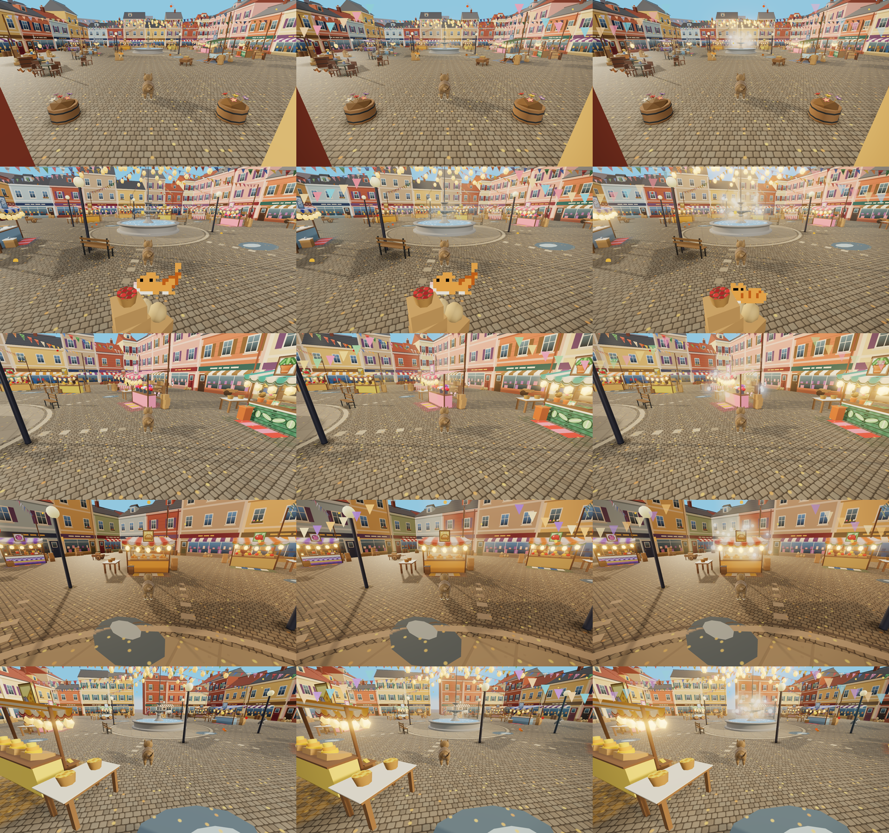

Columns: before (pass 6), after, and the golden moment (she has stood still 3 s; shown at 1280x720 at the game's chase camera, 70 degrees). Rows: (1) the gate looking at the fountain; (2) the fountain with the stalls fanning out; (3) the flower stall's corner; (4) the bakery lane at golden hour; (5) the far end looking back down the square. What changed at each: a warm triad grade, the screen's edges dimmed a little (one uniform the square's materials read), three bands of haze (a pale near one, a cloudy middle one, a warm glow beyond the focus), shafts aimed at the focus, a few pennants hung over the top corners as a frame, the lanterns brighter, a warm rim on her fur (the fill light). The golden moment adds sparkles over the focus, a glow and a soft three-note chime (once per vista per visit). Honest notes: the crates, awnings and bunting meshes were not recoloured or scaled; the frame is pooled pennant sprites. Rows 1 and 5 differ least; the moment's sparkles are soft. Whole frame 89,204 triangles, 208 meshes, 61 casters, 236 calls before and after (measured with ?info=1&life=150).
